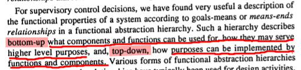
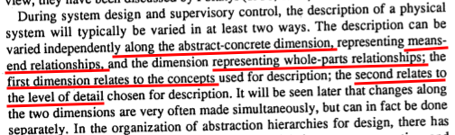
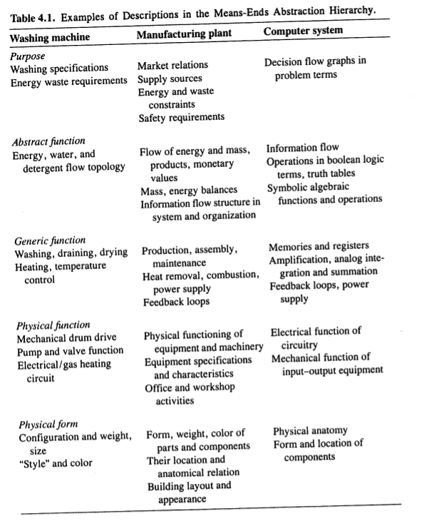
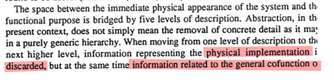
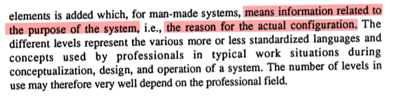
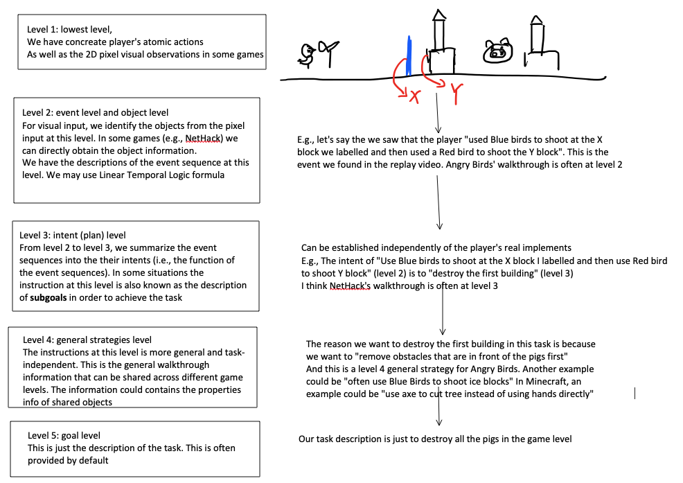
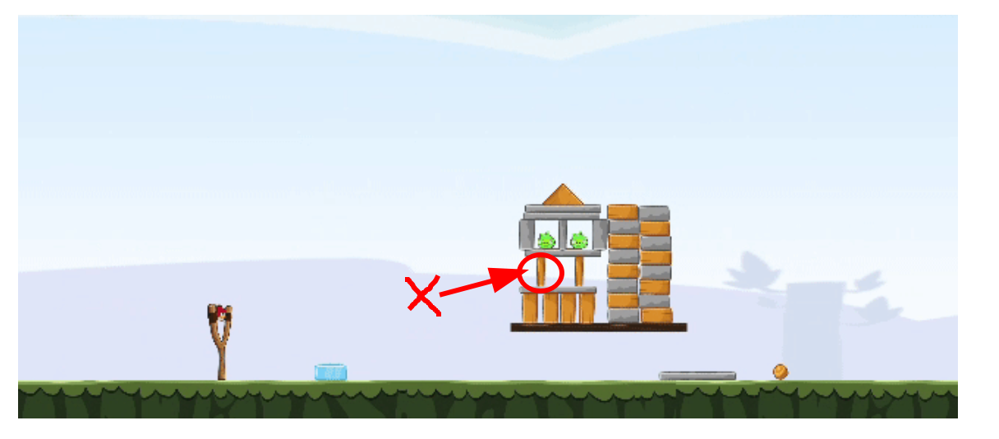
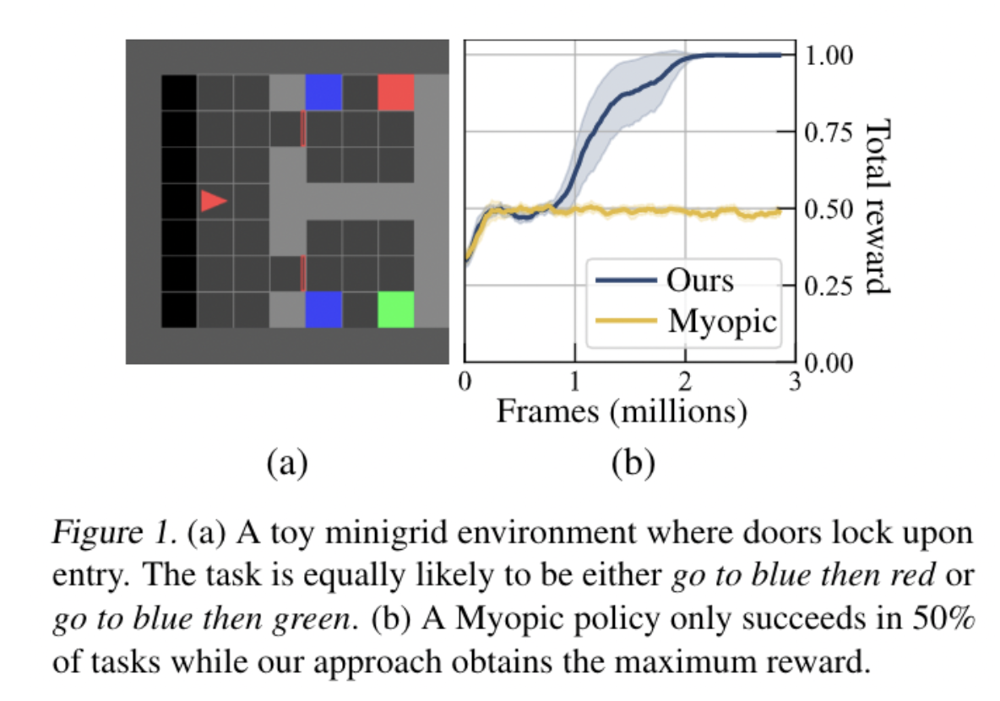
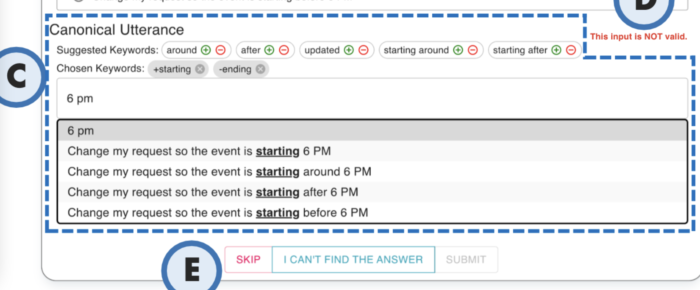
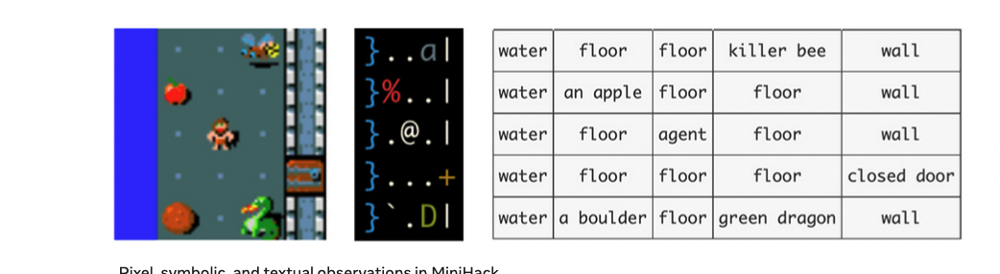

Last Week’s Work Review#
Feedback from the pre-confirmation meeting
- annotation process is complicated, a concrete plan is required
- need to know how to solve misinterpretation and quality issue
- concrete my research, get the timeline and deadline for each research steps before next confirmation meeting.
Annotations
-
Explain what is your purpose for this annotation work. what do you want to prove? what is the problem, what is the input and output and what is your solution.
-
think about how to design an annotation protocol, an annotation interface (tools)
-
You make some annotations first to demonstrate, using IGLU data, NetHack data, Angry Birds data. MineRL data
-
Maybe think about the annotation process details
Readings
- Read related works and papers “Linear Temporal Logic”, “NetHack”
- check this out https://ai.facebook.com/blog/minihack-a-new-sandbox-for-open-ended-reinforcement-learning
Spartan
- take my desktop back home
- check how to use Spartan resource
You need password to access to the content, go to Slack *#phdsukai to find more.
Part of this article is encrypted with password:
[TOC]
The purpose of this annotation work#
The purpose (I am going to explain this in questions and answers format)
our goal is to let agent play games using natural language instructions
More precisely, we want the agent to comprehend the semantics of the instructions and finally translate them into suitable actions.
what can annotation help
-> smoothing the learning curve for agents.
How to make an human instruction more comprehensible?
- for low level instructions, we sum up the intent behind it. (sum it up to higher level)
why we want high level intent when we only have low level instructions?
-> higher level strategies (intents) are more general and thus can be shared across different tasks. (generalisation)
- for high level instructions, we concretise it into low levels (e.g., concretise to linear temporal logic expressions)
why we want detailed concrete low level instructions?
-> mapping from low level expressions like (e.g., LTL expressions) to concrete agents’ actions is simpler than directly converting from some abstract strategies to concrete agents’ actions (an easier alignment task)
But why we need the annotation process to fill up the blank spots?
In the original dataset. we only have the instructions personalised by the speakers and thus usually we either have high level strategies or low level instructions but not both.
- e.g., Bob just told you to “shoot at 36.7 degrees” and you don’t know the intent of this instruction
- e.g., Bob told you that" in order to survive you need foods in Minecraft", and you don’t know how to execute this instruction exactly.)
By annotating the instructions (filling up the blank information), we human annotators complete the comprehension process. Before we come up with smart automatic natural language understanding algorithm, we can use this expanded instruction dataset for supervised learning
supervised learning of what task?
-> The task is to map from higher level strategies to low level commands and vice versa. We will train a model doing this task use the annotation dataset.
Why do we have this supervised learning mapping task and why we need this model?
-> Because of efficiency. It is less efficient for an RL agent to figure out how to convert high level strategies into final action sequences than having a pretrained model doing it.
-> The pretrained model can also help in terms of generalisation, for unseen tasks, the pretrained model extracted the general strategies from the instructions. The general strategies can be applied cross multiple tasks. (axiom: higher level instructions are more general and task independent and thus can be shared across multiple tasks) Therefore, the strategy information captured by the pretrained model may trigger the agent to find solutions by referring to gameplay demonstrations that follow the strategies.
Paper Reading Notes “Linear Temporal Logic”, “NetHack” “Annotation methods”#
-
Guided K-best Selection for Semantic Parsing Annotation
- Author: Anton Belyy et. al.
- Publish Year: 2021
- Review Date: Feb 2022
-
- Author: Thang M. Pham
- Publish Year: Jul 2021
- Review Date: Feb 2022
-
Learning to Ground Language to Temporal Logical Form
- Author: Roma Patel et. al.
- Publish Year: 2019
- Review Date: Feb 2022
-
LTL2Action: Generalizing LTL Instructions for Multi-Task RL
- Author: Pashootan Vaezipoor et. al.
- Publish Year: 2021
- Review Date: March 2022
-
The NetHack Learning Environment
- Author: Heinrich Kuttler et. al.
- Publish Year: Dec 2020
- Review Date: Mar 2022
-
Constrained Language models yield few-shot semantic parsers
- Author: Richard Shin et. al.
- Publish Year: Nov 2021
- Review Date: Mar 2022
Annotations demonstrations on IGLU data, NetHack data, Angry Birds data and MineRL data#
I will use the “abstraction hierarchy for control system” in the book as reference.





For our case, we will have 5 abstraction levels

Examples
Level 4 general strategy example: NetHack wiki standard strategy
Level 3 and Level 2 instruction example: Angry Birds


Level 3 intent: The bird is needed to be shot at the weak point of the structure to break the stability and destroy the pigs. Shooting elsewhere does not destroy the two pigs with a single bird shot.
Level 2 event description: use the Red bird to shot block X (assume that we labelled the weak point block as X)
Additional justification why we want instructions (such as LTL) for RL agents#
LTL2Action: Generalizing LTL Instructions for Multi-Task RL
Learning to Ground Language to Temporal Logical Form
and On the Expressivity of Markov Reward all mentioned that MDP cannot handle tasks that contain temporal constraints (e.g., requirements on the trajectories)
Why? because such constraints cannot be expressed as MDP reward signals. (eventually this is no more Markovian)
An example

Instruction annotation and collection process brainstorm#
here is my brainstorm about how we can collect the instructions data
Somehow when I think about this I always use Angry Birds as my reference. It is much easier for us to begin with if we can collect level 3 and level 2 walkthrough data of the game from the Internet.
But I think MineRL and NetHack are also good research environment
I think IGLU dataset just contain too much spatial information and the overall instructions is at level 2. Maybe we can skip IGLU for now.
-
Way 1: bottom up
-
we provide the task description at the highest level of abstraction (level 5)
-
we ask volunteers to just play the game, and we record the visual display as well as the player inputs (level 1)
-
After we collect the gameplay videos, we ask different person to look at the game replay and describe the domain dependent events and identify the visual objects (level 2)
-
Furthermore, we continue to ask another volunteer to refer to both level 1 and level 2 information so as to summarise the intent of the player (i.e., what is the function of the events) (level 3)
-
Continue to summarise the general strategies (task-independent) of the player (level 4)
-
-
Way 2: top down
- we provide the task description at the highest level of abstraction (level 5)
- we ask the game experts to provide general strategies about how to achieve the game task (level 4)
- let volunteers read the strategies and the task environment, after that they come up with concrete actual plans (level 3)
- ask volunteers to come up with concrete event sequences that reflect the plans (level 2)
- let the volunteer to follow the level 2 information to play the game. Their screen display and player input will be recorded (level 1)
How to collect annotations
we will use Guided K-best Selection for Semantic Parsing Annotation as reference.
- for level 2 event descriptions, we will force the annotator to use canonical utterance
- it means that we will have predefined limited vocabulary and fixed grammar
- if the annotator input words / phrases that are not stored in the vocabulary, then our annotation system will find the closest alternatives,
- In addition, the system will provide suggested keywords to expand the utterances.
- In the end the system will check if the input is valid or not (meaning that the input can be parsed into LTL formulas or other kinds of formal logical forms)

-
although canonical utterance is different from natural utterance, annotators would find it much easier to comprehend compared to those formal logical forms (e.g., LTL)
-
we need a model to paraphrase (convert) canonical utterance into LTL logical forms at level 2 (maybe we can use their model)
-
For level 3 and level 4, since the phrases at higher levels become more general and task-independent, we may allow annotators to use natural utterances so that we can utilise the large-scale pretrained foundation language models to extract the semantics.
- however, we may want to limit the word count
- also for simplicity, we may want to reduce the redundancy.
- when the annotator input their keywords, we will have a model to provide existing similar phrases candidates from the database so that annotators can select the already existing candidates to describe the intents and strategies. (something like the Twitter hashtag mechanism)
Nethack info#
The NetHack Learning Environment
you can watch others playing Nethack online
Intro video (Chinese) on NetHack and Roguelike games
https://www.bilibili.com/video/BV1Tt411S7DU
MiniHack from Facebook
supports pixel, symbolic and textual observations.

Indeed NetHack is a very suitable environment for us to conduct research, especially that they also have a forum that contains walkthrough information
Due to the randomized nature of NetHack, this advice is general in nature (e.g., explaining the behavior of various entities) and not a step-by-step guide. These texts could be used for language-assisted RL.